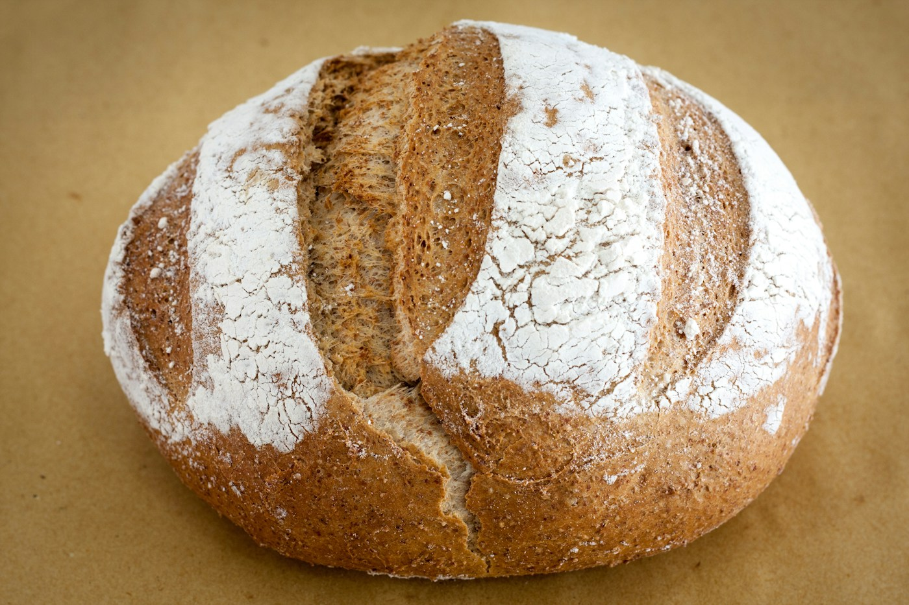
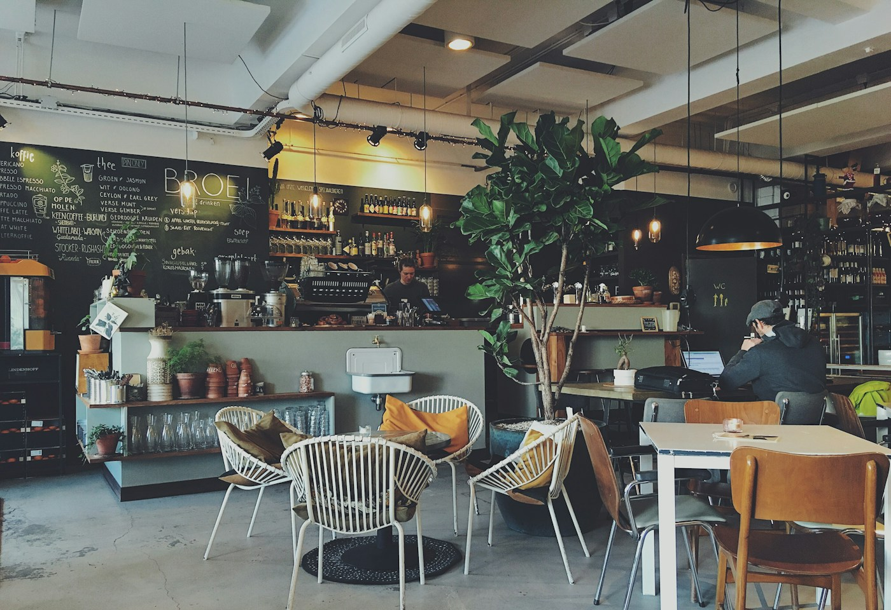

Why we give the dough the night
Fermentation is a quiet ingredient. Here's what happens when you let it take its time.
Notes from the kitchen
Little stories about flour, the people we meet, and all the good things that happen between the first mix and the last slice.

Fermentation is a quiet ingredient. Here's what happens when you let it take its time.
A note on cold butter, warm hands, and the little folds that make a pastry.

Meet the neighbours who make our morning routine feel like a community ritual.